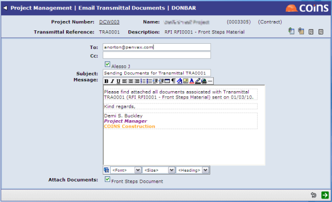

For each type of item (such as
Each type of item has a standard email template, which is used as the default text when you send an email. The email template can contain tokens for database fields, such as the name or code of the item, which

If there are any names on the Copies To list for the item, these are available as
If there are any documents associated with the item,
You can also send emails containing documents that relate to the project as a whole, using the Options menu from the main Communication Management screen.
Some types of items allow you to generate letters. These are based on standard templates and are opened as RTF documents in Word. The letter templates can contain tokens for database fields, such as the addressee's name and address;
Letters you generate are available on the "Linked" tab of the item, and also on the "Communications > Letters" tab.
Letters can have a reference code which